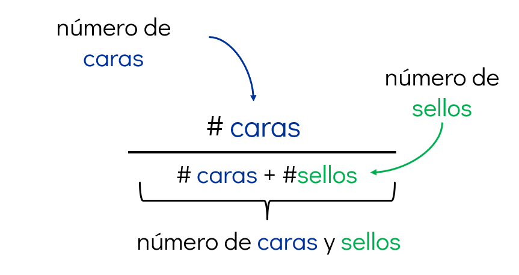
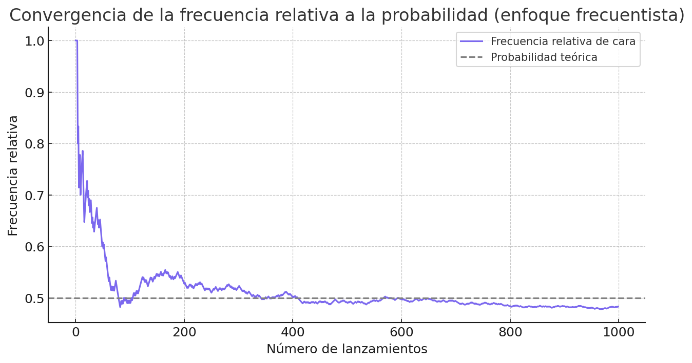

Interpretaciones de la probabilidad#
1.1. ¿qué representa una probabilidad?#
Ya sabemos qué es una función de probabilidad y cómo puede distribuirse sobre un espacio muestral. Es importante notar que, en este punto, la probabilidad es un objeto estrictamente matemático, cuya definición está separada del proceso mediante el cual se asignan probabilidades a los eventos.
Pero surge una pregunta fundamental:
¿Cómo se asignan o calculan esos valores de probabilidad en la práctica?
La respuesta depende de la interpretación que adoptemos sobre qué representa una probabilidad en un contexto real.
A continuación, exploramos dos de las interpretaciones más influyentes y ampliamente utilizadas: la frecuentista y la bayesiana.
1.2. Enfoque frecuentista: medir por repetición#
Si repetimos un experimento muchas veces, el cociente entre el número de veces que ocurre un evento y el total de repeticiones se usa como una estimación de su probabilidad. Este valor es lo que se conoce como la frecuencia relativa.
Este valor se llama frecuencia relativa del evento:
A medida que el número de experimentos crece, esta frecuencia relativa tiende (bajo ciertas condiciones) a estabilizarse en un valor fijo. Este valor es interpretado como la probabilidad del evento desde el punto de vista frecuentista.
Frecuencia relativa
La frecuencia relativa es el cociente entre el número de veces que ocurre un evento y el número total de repeticiones del experimento. En el enfoque frecuentista, esta proporción se interpreta como la probabilidad del evento, especialmente cuando el número de repeticiones es grande.
Ejemplo

Si lanzamos una moneda 1000 veces y cae cara en 502 de ellas, entonces:
Al aumentar el número de repeticiones, esta estimación se estabiliza. Podemos observar este fenómeno en la Figura 3.

Figura 3. En el enfoque frecuentista, la probabilidad se interpreta como el valor al que tiende la frecuencia relativa de un evento (por ejemplo, «cara» en una moneda) conforme se incrementa el número de repeticiones del experimento.
¿Es sólo una fórmula?
Aunque el enfoque frecuentista utiliza la frecuencia relativa para estimar la probabilidad, no se reduce solamente a una fórmula.
Este enfoque implica una forma específica de entender qué es una probabilidad:
La probabilidad de un evento se define como el límite de su frecuencia relativa al repetir el experimento muchas veces.
Se asume que las probabilidades son propiedades objetivas del mundo, no creencias subjetivas.
No se habla de probabilidades en eventos únicos o no repetibles, como “la probabilidad de que llueva mañana”.
Por tanto, el frecuentismo es una postura matemática y filosófica, no solo un método de cálculo.
Fundamento teórico
El hecho de que la frecuencia relativa se estabilice a medida que aumenta el número de repeticiones está respaldado por un resultado matemático conocido como la ley de los grandes números.
1.3. Enfoque bayesiano: probabilidades como creencias#
¿Qué significa decir que algo tiene cierta probabilidad de ocurrir desde la perspectiva bayesiana?
El enfoque bayesiano propone una forma muy intuitiva de verlo:
La probabilidad es una medida de qué tanto creemos que algo es cierto, basándonos en lo que sabemos hasta ahora.
Así, para los bayesianos, la probabilidad no es una propiedad fija del mundo como “la gravedad”, sino más bien una forma de representar nuestra incertidumbre. Y lo más importante:
💡 Esa creencia puede cambiar si recibimos nueva información.
Ejemplo
Supón que alguien te dice:
«Hay probabilidad de lluvia mañana».
Esa probabilidad puede ser diferente dependiento de si:
viste un pronóstico confiable,
el cielo está completamente despejado,
o escuchaste truenos a lo lejos.
Cada nueva pista cambia tu creencia. Y esto es justamente lo que el enfoque bayesiano busca formalizar: cómo actualizamos nuestras creencias cuando obtenemos nueva evidencia.
¿Cómo se hace esto?
La herramienta central para actualizar nuestras creencias es la probabilidad condicional:
Esta fórmula expresa la probabilidad de que ocurra un evento \((X)\), dado que se ha observado otro evento \((Y)\). La probabilidad condicional es el primer paso hacia un modelo bayesiano completo, ya que introduce la noción de información que modifica creencias.
Probabilidad condicional
La probabilidad condicional nos dice cuál es la probabilidad de que ocurra un evento \((A)\), dado que ya sabemos que ha ocurrido otro evento \((B)\).

Por ejemplo, la probabilidad de lluvia puede cambiar si sabemos que el cielo está despejado. Esta forma de actualizar creencias es esencial en el enfoque bayesiano.
Aquí es donde entra en escena el famoso Teorema de Bayes.
Dado que la probabilidad conjunta es simétrica, esto es \(p(X, Y) = p(Y, X)\), de la definición de probabilidad condicional obtenemos que:
De lo anterior, usando las igualdades de los extremos, obtenemos la regla de Bayes:
La regla de Bayes nos dice cómo invertir probabilidades condicionales, es decir, nos permite encontrar \(p(Y|X)\) a partir de \(p(X|Y)\).
En la práctica, es común calcular \(p(X)\) usando la regla de la probabilidad total:
\[ p(Y | X) = \frac{p(X | Y) p(Y)}{p(X)} = \frac{p(X | Y) p(Y)}{\sum_{Y} p(X|Y)p(Y)} . \]
Ejemplo. Se tira una moneda 5 veces. Queremos analizar los eventos
F: el primer tiro es cara
T: todos los 5 tiros son cara.
Descubrir
En particular \(p(T | F)\).
Es fácil observar que \(p(F | T) = 1\). También, sabemos que \(p(T) = \left(\frac{1}{2}\right)^5 = \frac{1}{32}\). Finalmente, \(p(F) = \frac{1}{2}\).
Finalmente, aplicando la regla de Bayes:
Teorema de Bayes: actualización de creencias
El Teorema de Bayes permite actualizar una creencia previa cuando se incorpora nueva información. Se compone de tres elementos:
Prior: lo que creíamos antes de observar datos \((P(A))\)
Likelihood (verosimilitud): qué tan probable es observar los datos si la hipótesis fuera cierta \((P(B \mid A))\)
Posterior: lo que creemos después de observar los datos \((P(A \mid B))\)

Este resultado es matemáticamente demostrable, y es la base de toda la estadística bayesiana.

Figura 4. En el enfoque bayesiano, una creencia inicial (distribución prior, línea azul) se combina con la evidencia aportada por los datos (verosimilitud, línea roja) para producir una creencia actualizada (posterior, línea verde). Esto se realiza aplicando el Teorema de Bayes.
Si ver una explicación rápida solamente de la fórmula, explicada con conjuntos, aquí te comparto el siguiente video:
Si quieres ver una explicación más profunda sobre la intuición de la fórmula de Bayes, el siguiente video puede ser útil: